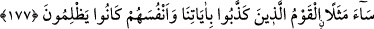
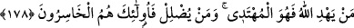

vasıfları, mucize olan Kur’an’ın zikri ve Hz. Muhammed (a.s.)’ın peygamber olarak
gönderilmesinin yakın olduğu hakkında insanlara müjdeler vardı. Daha önce bu
peygamberle kâfirlere karşı yardım istiyorlardı.
“Bu kıssayı anlat,” bu haberi onlara oku “belki düşünürler.” bu düşünceleri de
onları ibret almaya sevk eder.
177. Âyetlerimizi yalanlayan ve kendilerine zulmetmiş olan kavmin durumu ne
kötüdür!
Kendi aleyhlerine delil ortaya konduktan ve kendileri bunu bildikten sonra
“ayetlerimizi yalanlayan ve kendilerine de zulmeden” yani yalanlayarak ancak
kendilerine zulmederler. Çünkü yalanlamalarının vebâli kendilerinden başkasına
ulaşmaz. İşte bu “topluluğun durumu ne kötüdür.”
Haddâdî, şöyle demiştir: Bu kötülük, onların fiillerine aittir; verilen örneğe değil.
Sanki şöyle denilmiştir: Onların, böyle kötü bir vasıfla nitelenmelerine sebep olan
fiilleri ne kötüdür. Söz konusu mesel (benzetme) ise Allah tarafından olan bir hikmettir
ve doğrudur.
178. Allah kimi hidayete erdirirse, doğru yolu bulan odur. Kimi de şaşırtırsa, işte
asıl ziyana uğrayanlar onlardır.
“Allah kime yol gösterirse,” kimin içinde hidayeti yaratırsa “işte” kim olursa olsun
“doğru yolu bulan odur.” başkası değil. Öğüt ve hatırlatma, ancak hidayetin meydana
gelmesine yarayan normal vasıtalardan ibarettir. Bunlar, kişinin iradesini, hidayeti elde
etmeye yönlendirmesine yardımcı olmaktan öte bir tesire sahip değildir. “Kimi de
saptırırsa, işte ziyana uğrayanlar onlardır.” Allah, kimin de içinde hidayete ulaşma
istidadı yaratmaz, aksine iradesini sapıklığı tercihe sarfedecek bir dalâlet yaratırsa işte
onlar, başka değil tam olarak zarara uğrayanların ta kendileri olurlar.
Ayette işaret vardır ki bugün Hakk’ın inâyetiyle hidayete kavuşan, böylece ulvî
mertebelerden süflî derekelere düşmekten kurtulan kimseler, Allah Teâlâ’nın ruhlar
âleminde saçtığı nurun serpintilerinden nasibini almış olanlardır. Allah’ın hor ve zelil
kılması sebebiyle hevâsına tâbî olup hevaları kendilerini Allah’ın yolundan saptıranlar
ise bu nurdan hiç nasip almayan bu sebeple dalâlet ve hüsrana düşenlerdir.
Süfyan Sevrî, sanki bir gemideymiş ve her an boğulmaktan korkuyormuş gibi